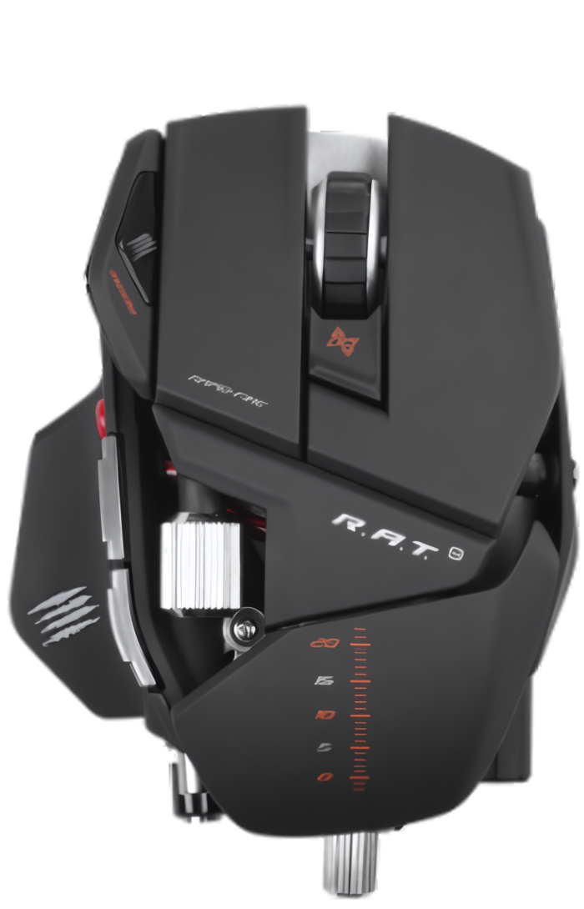

Panel
Botones
DPI
Macros
Perfiles .pr0
conectando…
rat9
-config
Mad Catz R.A.T.9 · 0738:1709
conectando…
perfil
—
batería
—
cargando diagrama…

Render cenital del
software original de Mad Catz
. Para la geometría exacta y las zonas clicables, usa la vista
Esquema
.
Giro real del aparato, fotograma a fotograma.
Arrastra
para girarlo, o usa las flechas del teclado.
DPI del perfil activo
dpi
Esquema
Producto
Las dos capas
Giro
Dispositivo
Mad Catz R.A.T.9
Interfaz
USB 0738:1709
Vista
Planta
Estado
—